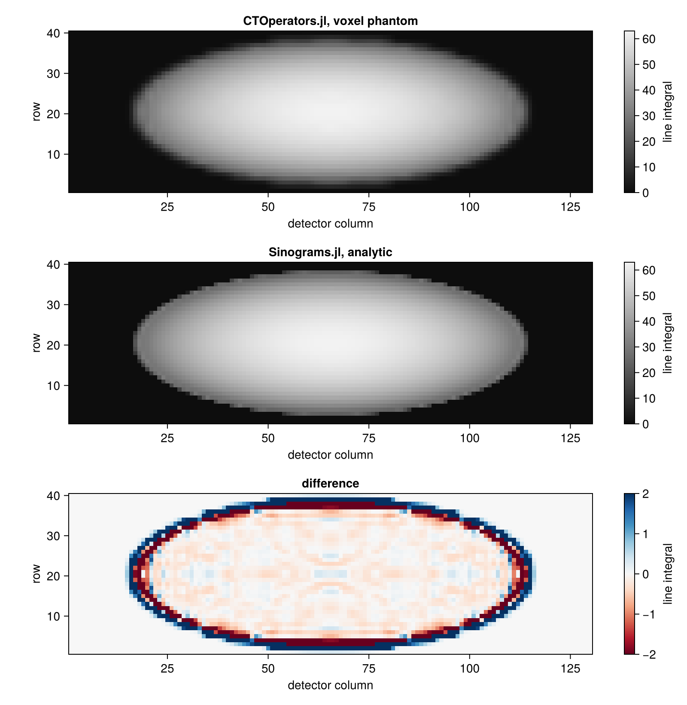
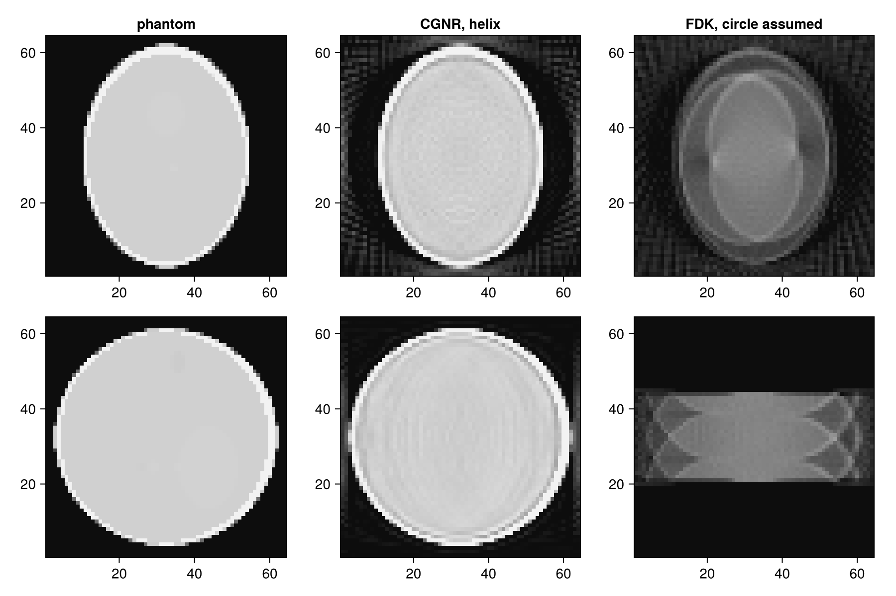

Use Geometries of Sinograms.jl
Sinograms.jl describes CT scans with geometry types such as CtFanArc (cone beam with the curved detector of clinical scanners), CtFanFlat (flat panel), CtPar and their 2D counterparts, and provides analytic reconstructions (FBP, FDK). With Sinograms loaded, the projectors of CTOperators.jl accept these geometries directly: both packages follow the same conventions, and the data has Sinograms' layout.
using CTOperators, Sinograms, ImagePhantoms, RegularizedLeastSquares, LinearOperatorCollection
using CairoMakie, LinearAlgebra
using ImageGeoms: axisA Sinograms geometry in a projector
A cone-beam scan with an arc detector over a full circle, and the image grid (lengths in mm). Sinograms.jl also accepts Unitful lengths; CTOperators.jl strips the units without converting them, so the lengths of the Sinograms geometry must be in the same unit as those of the ImageGeom:
rg = CtFanArc(; ns=130, ds=0.6, nt=40, dt=0.8, na=64, dsd=400, dod=100)
image = ImageGeom(; dims=(64, 64, 24), deltas=(1.0, 1.0, 1.0))
op = JosephProjector(image, rg)
datasize(op) == Sinograms.dims(rg)trueThe projector uses an ArcConeBeam built from rg; projection_geometry(rg) returns it, for example to inspect the rays:
projection_geometry(rg)ArcConeBeam{Float64}: 64 views, detector of 130 x 40 cells, stored in ArrayBoth packages describe the same rays: the projection of the voxelized Shepp-Logan phantom agrees with Sinograms' analytic projection along its rays, up to the error of representing the phantom by voxels (largest at the thin skull):
objects = ellipsoid(ellipsoid_parameters(; fovs=(64, 64, 24)))
x = Float32.(phantom(axis(image, 1), axis(image, 2), axis(image, 3), objects, 2))
y_ours = op * x
y_sinograms = Float32.(radon(rays(rg), objects))
norm(y_ours - y_sinograms) / norm(y_sinograms)0.054181844f0fig = Figure(size=(800, 820))
for (j, (name, p)) in enumerate((("CTOperators.jl, voxel phantom", y_ours), ("Sinograms.jl, analytic", y_sinograms),
("difference", y_ours - y_sinograms)))
ax = Axis(fig[j, 1]; title=name, aspect=DataAspect(), xlabel="detector column", ylabel="row")
hm = heatmap!(ax, p[:, :, 1]; colormap=j == 3 ? :RdBu : :grays,
colorrange=j == 3 ? (-2, 2) : (0, maximum(y_sinograms)))
Colorbar(fig[j, 2], hm; label="line integral")
end
A helical scan
Sinograms.jl describes helical scans (CtSourceHelix; the pitch is a fraction of the axial field of view per turn), but its FDK assumes a circular orbit. The projectors handle any trajectory, so an iterative method reconstructs the helical scan. Here four turns over a volume that is taller than the field of view of one turn:
rg_helix = CtFanArc(; ns=130, ds=0.6, nt=40, dt=0.8, na=4 * 64, orbit=4 * 360, dsd=400, dod=100,
src=CtSourceHelix(; pitch=1.0, source_z0=-48))
image = ImageGeom(; dims=(64, 64, 64), deltas=(1.0, 1.0, 1.0))
objects = ellipsoid(ellipsoid_parameters(; fovs=(64, 64, 64)))
x_true = Float32.(phantom(axis(image, 1), axis(image, 2), axis(image, 3), objects, 2));Sinograms' rays handles only circular orbits, so we simulate the data with the projector instead. To avoid using the same model for data and reconstruction, it projects the phantom on a grid twice as fine:
fine = ImageGeom(; dims=(128, 128, 128), deltas=(0.5, 0.5, 0.5))
x_fine = Float32.(phantom(axis(fine, 1), axis(fine, 2), axis(fine, 3), objects, 2))
y = JosephProjector(fine, rg_helix) * x_fine;CGNR with the projector on the reconstruction grid, and for comparison Sinograms' FDK, which treats the scan as circular:
op = JosephProjector(image, rg_helix)
solver = createLinearSolver(CGNR, op; AHA=normalOperator(op), iterations=20)
x_cg = reshape(solve!(solver, vec(y)), size(x_true))
x_fdk = Float32.(fdk(plan_fbp(rg_helix, image), y));Axial (top) and sagittal (bottom, z from bottom to top) slices: CGNR recovers the whole volume (with some ringing at the skull, where the voxel model cannot match the finer data); FDK sees only a band of slices, smeared by the motion of the source.
fig = Figure(size=(900, 600))
for (j, (name, img)) in enumerate((("phantom", x_true), ("CGNR, helix", x_cg), ("FDK, circle assumed", x_fdk)))
heatmap(fig[1, j], img[:, :, 32]; colormap=:grays, colorrange=(0, 1.2), axis=(; title=name, aspect=DataAspect()))
heatmap(fig[2, j], img[32, :, :]; colormap=:grays, colorrange=(0, 1.2), axis=(; aspect=DataAspect()))
end
Supported geometries
| Sinograms.jl | CTOperators.jl |
|---|---|
CtFanFlat (circular or helical source) | ConeBeam |
CtFanArc (circular or helical source) | ArcConeBeam |
CtPar | ParallelBeam |
SinoFanFlat, SinoFanArc, SinoPar (2D) | the same, with one detector row at z = 0 |
2D data has the shape (nb, 1, na), Sinograms' (nb, na) with a detector row in the middle. The Mojette geometries are not supported.
With Sinograms.jl 0.5, analytic projections radon(rays(rg), objects) of a CtFanFlat geometry do not match its flat-panel data (the polar angle of rays has the wrong sign). The geometry that CTOperators.jl builds from CtFanFlat is not affected.
This page was generated using Literate.jl.